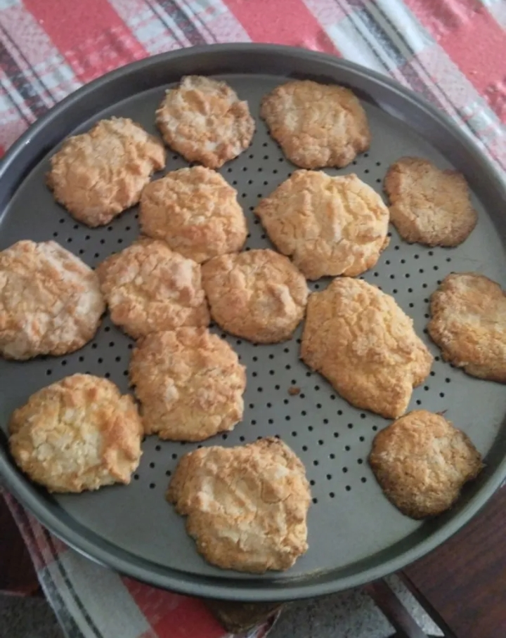

Galletas de maicena con gusto a eleccion
Con esta receta te sale una bandeja de galletas sabrosas, ideales para compartir mientras tomas un mate con tus seres queridos

- 20 minutos de horneado
- 10 minutos de preparacion
- Porciones variables depende del cortador de galletas que se use, generalmente sale una bandeja entera
- Dificultad: Facil
Ingredientes
- 1 Taza de maicena
- 1 Taza de harina de trigo
- 1/2 Taza de azucar
- 2 Cucharadas de vanilla, tambien puede ser jugo y ralladura de limon o incluso trozos de chocolate
- 1 Cucharada de polvo para hornear
- 1/2 Taza de aceite
- 1/4 Taza de leche
Preparacion
- Se recomienda precalntar el horno a 180°C antes de comenzar la preparacion.
- En un recipiente grande mezclar los ingredientes secos (Maicena,Harina de trigo,Azucar y Polvo de hornear).
- Agregar el aceite junto al gusto elegido (vainilla,limon,chocolate,etc) y mezclar hasta integrar todo.
- Incorpora la leche poco a poco, hasta que la masa tenga una consistencia suave y manejable. Es posible que no necesites usar toda la leche, dependiendo de la humedad de la masa.
- Formas bollos con la masa y aplastarlos en la bandeja. Tambien se puede usar un cortagalletas si la masa quedo lo suficientemente seca para que no se pegue a la mesada.
- Hornear las galletas en el horno precalentado previamente el tiempo necesario hasta que se doren las galletas
¿Queres mas recetas?
Link a esta receta en Cookpad
Link a Cookpad para que veas otras recetas